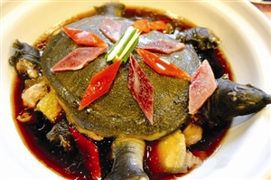

臭鳜鱼

臭鳜鱼是安徽省的传统名菜，属徽菜系。
其闻起来臭，吃起来香，肉质鲜嫩，醇滑爽口。
以新鲜鳜鱼为主料，经特殊发酵工艺制作而成，是徽菜中的代表菜品。
毛豆腐
毛豆腐是徽州地区的传统名菜，属徽菜系。
特点是表面长有一层白色绒毛，口感醇厚，风味独特。
以豆腐为原料，经发酵后煎制而成，富含氨基酸，营养丰富。
火腿炖甲鱼

火腿炖甲鱼是徽菜中的经典滋补菜品，属徽菜系。
以徽州火腿和甲鱼为主料，加入姜片等调料炖制而成。
成品汤汁浓郁，肉质酥烂，营养丰富，具有滋阴补肾的功效。
臭鳜鱼是安徽省的传统名菜，属徽菜系。
其闻起来臭，吃起来香，肉质鲜嫩，醇滑爽口。
以新鲜鳜鱼为主料，经特殊发酵工艺制作而成，是徽菜中的代表菜品。
毛豆腐是徽州地区的传统名菜，属徽菜系。
特点是表面长有一层白色绒毛，口感醇厚，风味独特。
以豆腐为原料，经发酵后煎制而成，富含氨基酸，营养丰富。
火腿炖甲鱼是徽菜中的经典滋补菜品，属徽菜系。
以徽州火腿和甲鱼为主料，加入姜片等调料炖制而成。
成品汤汁浓郁，肉质酥烂，营养丰富，具有滋阴补肾的功效。